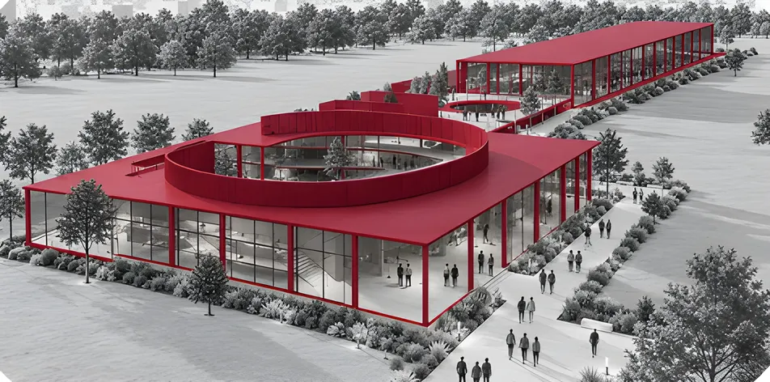
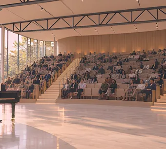
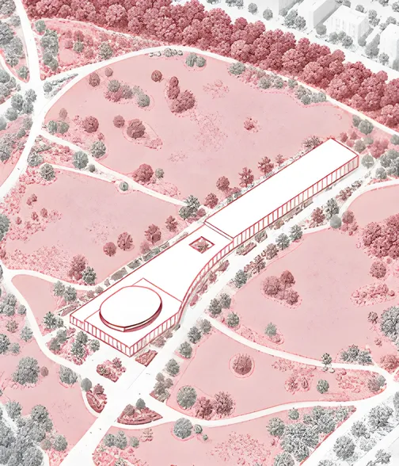
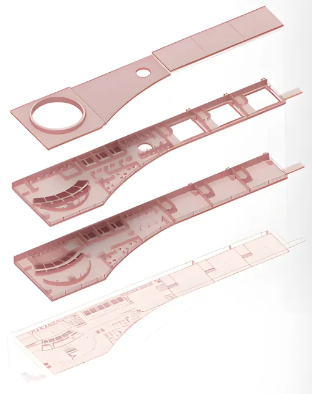
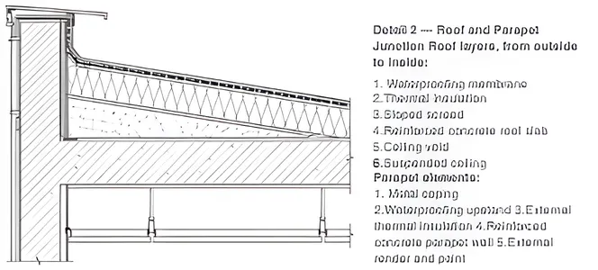

Aura Theatre
Театар во парк: долго стаклено крило што завршува со кружна сала, под еден тенок покрив.

- Тип
- Театар и културен центар
- Локација
- Аеродром, Скопје
- Статус
- Идејно решение
Театарот Аура ги поврзува изведбата, архитектурата и пејзажот во една линија. Долгото крило ги содржи канцелариите, салите за проби и прес-центарот. На неговиот крај, кружниот волумен ја содржи салата и го насочува целиот план кон сцената.
Широките рамни покриви и тенките столбови создаваат заштитени рабови од сите страни. Стаклените фасади ги отвораат јавните простории кон паркот, па фоајето е дел од прошетката.
Седиштата се закривени и скалести за јасна видливост. Покривот, атиката и застаклувањето се разработени до ниво на мембрана.
Свртете ја
Театар Аура како дијаграм на волумени: стаклениот павилјон, закривениот спој, долгото крило и дрвениот прстен на покривот. Поедноставено според нејзините основи, не во размер. Повлечете или користете ги стрелките за да ја свртите.







